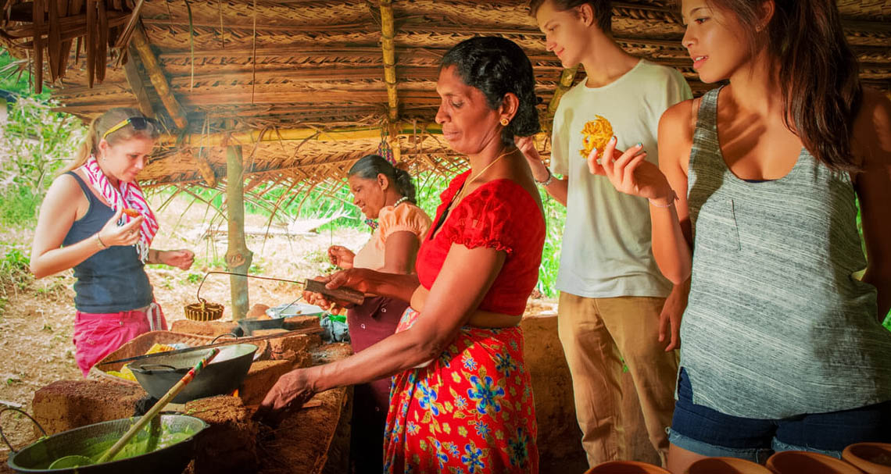

things to do in SRI LANKA
HIKING
Sri Lanka offers a variety of hiking experiences, from iconic peaks to lush rainforests.
Popular options include Adam's Peak, Ella Rock, Horton Plains, and the Knuckles Mountain Range.
You can also explore Sinharaja Forest Reserve and Pidurangala Rock.
Popular Hiking Destinations:
Adam's Peak (Sri Pada): A sacred mountain climbed at night for sunrise views.
- Ella Rock: A challenging day hike with stunning views.
- Horton Plains National Park: Features World's End, a dramatic cliff edge, and Baker's Falls.
- Knuckles Mountain Range: Offers multi-day treks and diverse landscapes.
- Sinharaja Forest Reserve: A UNESCO World Heritage site with rich biodiversity and hiking trails.
- Pidurangala Rock: Offers panoramic views of Sigiriya Rock Fortress.
- Riverston Peak: Offers breathtaking views of the Knuckles mountain range.
Other notable hiking areas:
- Sigiriya: The iconic Lion Rock fortress can be hiked to the top.
- Hakgala Botanical Garden Trails: Offers various trails with diverse flora.
- Bambarakanda Falls Hike: Hike to Sri Lanka's highest waterfall.
- Heeloya Village Hike: Explore the village and its surrounding areas.
- Meemure Village Hike: Experience the remote village and its natural beauty.
- Bible Rock (Bathalegala): A challenging hike with rewarding views
more about HIKING SRI LANKA
SURFING
Sri Lanka offers excellent surfing opportunities on both its southwest and east coasts, with distinct seasons for each.
The southwest coast, including Weligama, Hikkaduwa, and Arugam Bay, is known for its beginner-friendly waves and consistent surf, especially during the November to April season.
The east coast, particularly Arugam Bay, is a haven for experienced surfers with its world-class waves and vibrant atmosphere, particularly during the May to September season.
Southwest Coast:
Weligama:
A popular spot for beginners with long, gentle waves and numerous surf schools.
Hikkaduwa:
Known for its reef breaks and a mix of beginner-friendly and challenging waves.
Mirissa:
Offers both beginner-friendly beach breaks and more powerful reef breaks for experienced surfers.
Ahangama:
Features reef breaks like Rajith Surf Point and Midigama with various options for different skill levels.
east coast
Arugam Bay
A world-renowned surfing destination with a consistent point break suitable for all levels.
Okanda:
Offers a fun, walled-up wave with a hollow section and is known for picking up similar swells to Arugam Bay.
Whiskey Point:
A popular spot with a right-hand point break.
Peanut Farm:
A right-hand point break suitable for all levels.
Elephant Rock:
A good spot for beginners, located near Arugam Bay.
more about SURFING SRI LANKA
FOOD TOURS

Food tours in Sri Lanka offer a fantastic way to experience the local culture and cuisine.
These tours typically involve visits to markets, cooking demonstrations, and opportunities to sample a variety of Sri Lankan dishes, often with local families.
Some tours focus on specific regions or themes, such as street food, seafood, or cooking with local families.
What to Expect on a Sri Lankan Food Tour:
Local Markets:
Explore bustling markets to see fresh produce, spices, and ingredients used in Sri Lankan cooking.
Cooking Classes:
Participate in hands-on cooking classes, learning to prepare traditional dishes like curries, hoppers, and kottu.
Home Visits:
Some tours offer the chance to visit local homes and learn about Sri Lankan cuisine from families, often including meals with them.
Cultural Experiences:
Food tours often incorporate cultural elements, such as visits to temples, historical sites, or tea plantations.
Variety of Dishes:
Sample a wide array of Sri Lankan dishes, from street food staples to regional specialties.
more about FOOD TOURS SRI LANKA